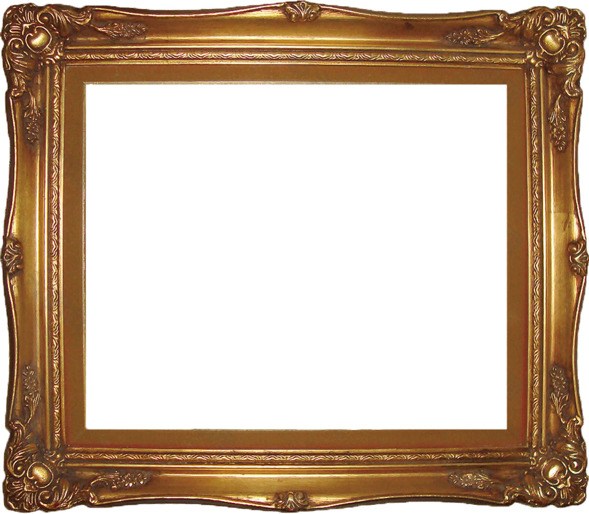
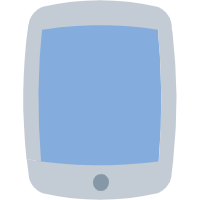

使用图像
引入图像到 canvas 里需要以下两步基本操作：
1.获得一个指向
HTMLImageElement
的对象或者另一个 canvas 元素的引用作为源，也可以通过提供一个 URL 的方式来使用图片。
2.使用 drawImage() 函数将图片绘制到画布上。
获得需要绘制的图片
HTMLImageElement
Image() 函数构造的，或者任何的 <img> 元素
HTMLVideoElement
用 <video> 元素作为图片源，你可以从视频中抓取当前帧作为一个图像。
HTMLCanvasElement
可以使用另一个 <canvas> 元素作为图片源。
ImageBitmap
这是一个
高性能的位图
，可以
低延迟
地绘制，可以从上述的所有源以及其他几种源中生成。
可以使用另一个 <canvas> 元素作为图片源。
这些源统一由 CanvasImageSource 类型来引用。
获取相同页面内的图片
我们可以通过下列方法来获得与 canvas 相同页面内的图片的引用：
1.
document.images
集合；
2.
document.getElementsByTagName()
方法；
3.如果你知道想使用的图片的 ID，可以用
document.getElementById()
来获得这个图片；
使用其他域名下的图片
在 HTMLImageElement 上使用
crossOrigin
属性，可以请求加载其他域名上的图片。
如果图片的服务器允许跨域访问这个图片，那么你可以使用这个图片而不污染 canvas，否则使用这个图片将会
污染 canvas
。
使用其他 canvas 元素
用 document.getElementsByTabName 活 document.getElementById 方法来获取其他 canvas 元素。该 canvas 应该是已经准备好了的。
一个常用的应用就是将第二个 canvas 作为另一个大的 canvas 的缩略图。
绘制图片
drawImage(image, x, y)
image
：是 image 或者 canvas 对象。
x, y
：起始坐标。
你的浏览器不支持 canvas，请更换浏览器使用。
缩放
drawImage(image, x, y, width, height)
。
image
：是 image 或者 canvas 对象。
x, y
：起始坐标。
width, height
：这两个参数用来控制当向 canvas 画入时应该缩放的大小。
你的浏览器不支持 canvas，请更换浏览器使用。
切片
drawImage(image, sx, sy, swidth, sheight, dx, dy, dwidth, dheight)
。
9个参数用于控制切片展示。
image
：是 image 或者 canvas 对象。
sx, sy, swidth, sheight
：定义裁剪源图片的哪一部分。
dx, dy, dwidth, dheight
：将前面裁剪出来的图片放到指定的位置。
你的浏览器不支持 canvas，请更换浏览器使用。
相框
因为这里素材不太行，所有看不出效果, 相框应该是透明的png
你的浏览器不支持 canvas，请更换浏览器使用。

画廊
这里是相框，因为相框不是透明的，所以先绘制相框，然后再绘制图片，让图片在相框上面

控制图像的缩放行为
imageSmoothingEnabled
。
控制缩放在缩放图像时使用平滑算法。默认为 true：平滑缩放。你可以设置为 false 禁用此功能。